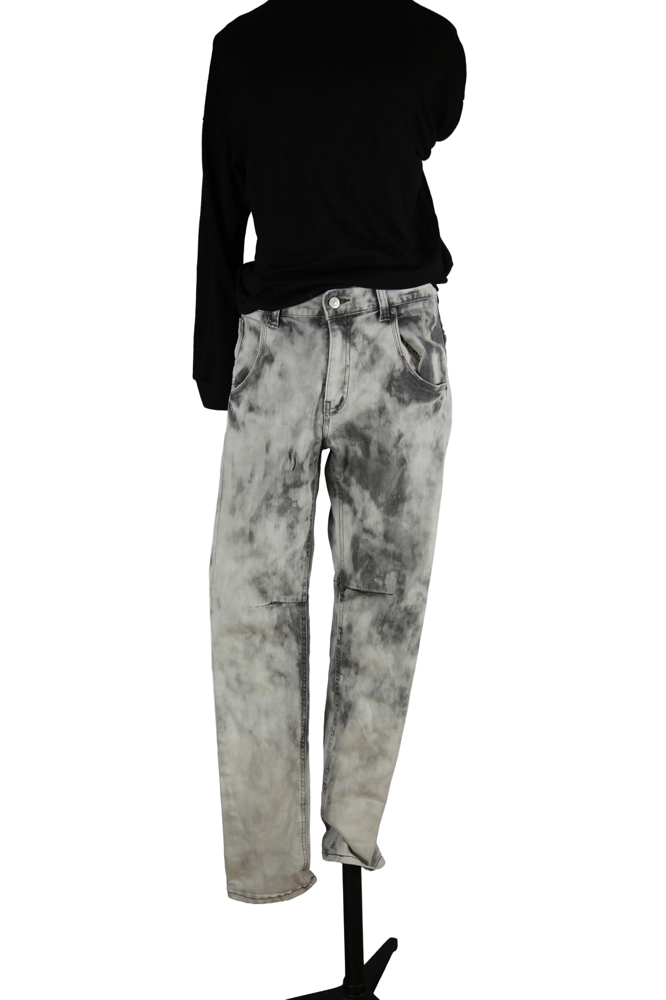

1 / 14Aus dem kuratierten Archiv von Disorder119. Markante Denim-Hose von Supreme in grauer, unregelmäßig ausgewaschener Optik. Die charakteristische Cloud-Wash-Waschung erzeugt eine marmorierte Oberfläche und verleiht dem Piece einen klaren Wiedererkennungswert. Der klassische Five-Pocket-Schnitt trifft auf eine gerade, ausgewogene Silhouette, die locker fällt und vielseitig kombinierbar ist. Robuster Denim, präzise Nähte und das ikonische Supreme-Branding am Bund verorten die Hose eindeutig in der New Yorker Archivästhetik der Marke. Ein ausdrucksstarkes Denim-Piece zwischen Streetwear und zeitloser Alltagstauglichkeit. Details: Marke: Supreme Farbe: Grau Größe: M Passform: Gerade geschnitten Verschluss: Reißverschluss mit Knopf Material: Denim Herstellungsland: Nicht angegeben Fotografie & Passform: Das Kleidungsstück wurde auf unserer Standard-Schneiderpuppe fotografiert, die wir zur konsistenten Darstellung aller Kleidungsstücke verwenden. Maße der Schneiderpuppe: Brustumfang 89 cm Taillenumfang 66 cm Hüftumfang 89 cm Schulterbreite 38 cm Zustand: Gebrauchter Zustand mit waschungsbedingten Farbverläufen als originales Designelement. Keine strukturellen Schäden erkennbar. Rechtliche Hinweise: Verkauf als gebrauchtes Kleidungsstück. Die Beschreibung erfolgt nach bestem Wissen und Gewissen. Farbnuancen und Oberflächenwirkungen können aufgrund von Lichtverhältnissen bei der Fotografie sowie unterschiedlicher Bildschirmdarstellungen leicht vom Original abweichen. Disorder119 steht für sorgfältig kuratierte Designerstücke mit Fokus auf Authentizität, Qualität und zeitlose Relevanz.
Shop-Kontakt noch nicht eingerichtet: WhatsApp-Nummer oder E-Mail-Adresse fehlen in SHOP_CONFIG (index.html).
Disorder119 · Kuratiertes Archiv für Designer-, Vintage- und Contemporary-Mode. Jedes Stück wird einzeln ausgewählt, fotografiert und beschrieben.